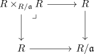

boundary map from K1 to K0 of rings
Definition
Let $R$ be a ring, $\mathfrak{a} \subseteq R$ an ideal Then the boundary map of $K_1$ and $K_0$ is defined as
\begin{align*}
\partial: K_1(R/\mathfrak{a}) \rightarrow& K_0(R, \mathfrak{a}) \\
[\overline{A}] \mapsto& [(R^n,R^n,\overline{A})] - [n]
\end{align*}
where
- $K_1(R/\mathfrak{a}) \cong \mathrm{Gl}(R/\mathfrak{a})/E(R/\mathfrak{a})$ is canonically identified (cf. whitehead theorem for k1 of a ring)
- $[n]$ denotes the isomorphism class of the free module with rank $n$
- $[(R^n,R^n, \overline{A})]$ denotes the clutching construction for the pullback

i.e.
\begin{align*}
[(R^n,R^n,\overline{A})] = \{(x,y) \in R^n \times R^n \vert \overline{A}(\overline{x}) = \overline{y}\}
\end{align*}
Welldefined
independent of $n$ for $\mathrm{Gl}_n$
follows as
\begin{align*}
(\overline{A \oplus E_m}) \mapsto& [(R^n,R^n,\overline{A \oplus E_m})] - [n + m] \\
=& [(R^n,R^n,\overline{A}] + [m] - [n+m] \\
=& [(R^n,R^n,\overline{A}] - [n] \\
\end{align*}
additive ???
is missing
independent of representatitive: $\mathrm{E}(R/\mathfrak{a}) \subseteq \mathrm{ker}$
we show that the image of $\mathrm{Gl}(R) \rightarrow \mathrm{Gl}(R/\mathfrak{a})$ lies in the kernel. Then it suffices to show that $\mathrm{E}(R/\mathfrak{a}) \subseteq \mathrm{im}(\mathrm{Gl}(R) \rightarrow \mathrm{Gl}(R/\mathfrak{a}))$.
kernel as supset: $\mathrm{im}(\mathrm{Gl}(R)) \subseteq \mathrm{ker}(\partial)$
Suppose there exist a preimage $A \in \mathrm{Gl}_n(R)$. Then
\begin{align*}
(R \times_{R/\mathfrak{a}} R)^n \rightarrow& [(R^n,R^n,A)] \\
(x,y) \mapsto& (Ax, y)
\end{align*}
defines an isomorphism.
Thus $[(R^n,R^n,\overline{A})] = [n]$ or
\begin{align*}
\partial(\overline{A}) = [n] - [n] = [0]
\end{align*}
reduction: $E(R/\mathfrak{a}) \subseteq \mathrm{im}(\mathrm{Gl}(R))$
follows from choosing lifts $e_{i,j}(r)$ of generators $e_{i,j}(\overline{r})$